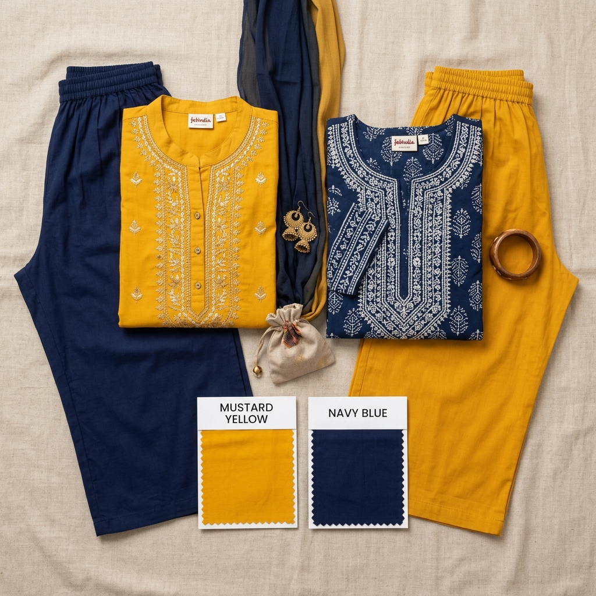

Last updated: July 18, 2026
How to Pair Contrasting Kurta & Bottom Colours from Garments You Already Own

Every ethnic wardrobe has them: orphan kurtas.
Whether it is a beautifully printed silk kurta whose original bottom wore out, a standalone tunic bought on sale, or a solid plain kurta gifted during a festival, many of our favorite tops sit unworn simply because we don't know what color bottom to pair them with.
Pairing contrasting colors between a top kurta and bottom pant or skirt is one of the easiest ways to look stylish and modern. However, random color combinations can sometimes look mismatched or disjointed.
In this step-by-step guide, we share 5 color contrast rules to pair separate kurtas and bottoms from clothes you already own.
The 3 Foundations of Garment Color Matching
When pairing an orphan kurta with a separate bottom pant or skirt, consider three elements:
1. Undertone Temperature: Keep both garments in the same undertone family (Warm + Warm or Cool + Cool) unless using an intentional complementary pair.
2. Value Contrast: Balance a dark heavy top with a lighter bottom (or vice versa).
3. Pattern vs. Solid: If your kurta is heavily printed, pair it with a solid bottom. If your bottom is printed or textured, choose a solid kurta.
```
+-----------------------------------------------------------------------+
| THE 3 GARMENT MATCHING FOUNDATIONS |
|---|
+-----------------------------------------------------------------------+
| Foundation 1: Undertone Alignment (Warm + Warm / Cool + Cool) |
|---|
| Foundation 2: Value Contrast (Dark Top + Light Bottom) |
| Foundation 3: Texture Balance (Printed Top + Solid Bottom) |
+-----------------------------------------------------------------------+
```
Rule 1: The Neutral Bottom Anchor (The Universal Match)
If you have a bright or printed orphan kurta and are unsure what to wear under it, rely on the 4 Universal Neutral Anchors:
- Off-White / Cream: Pairs with ALL warm-toned kurtas (Mustard, Rust, Coral, Olive, Saffron, Maroon).
- Jet Black / Charcoal: Pairs with ALL high-saturation or dark kurtas (Royal Blue, Emerald, Crimson, Fuchsia, Plum).
- Beige / Camel: Pairs with earthy tones (Forest Green, Brick Red, Chocolate, Ochre).
- Classic Denim / Navy: Pairs with casual daily cotton kurtas of any color.
> Rule: If the kurta has a light or white base, pick Off-White. If the kurta is dark or jewel-toned, pick Black or Charcoal.
Rule 2: Color Repeat from Printed Kurtas
If your orphan kurta has a floral, Bandhani, Kalamkari, or Ajrakh print:
1. Look closely at the print background and secondary accent colors.
2. Pick the 2nd most dominant color in the print (not the background color).
3. Match your bottom pants or skirt to that exact accent color.
Example: For an indigo blue Kalamkari kurta featuring beige peacocks and small maroon flowers:
- Do not default to plain blue.
- Pick Maroon or Beige for your trousers. This picks up the accent color in the print and makes the outfit look custom-matched!
Rule 3: High-Contrast Complementary Combinations
For a bold, modern look, pair your kurta with a bottom in a complementary color family:
| Orphan Kurta Color | Best Contrasting Bottom Color | Vibe |
|---|---|---|
| Mustard Yellow | Teal / Royal Blue / Navy | Festive & Bright |
| Deep Forest Green | Warm Terracotta / Rust Orange | Earthy & Chic |
| Plum / Eggplant | Warm Olive Green / Sage | Elegant & Unique |
| Coral / Peach | Mint Green / Soft Sage | Summer / Casual |
| Magenta / Fuchsia | Emerald Green / Dark Bottlegreen | Festive / Evening |
Rule 4: Tonal Monochromatic Pairing
Monochromatic pairing means selecting a bottom pant in the same color family as your kurta, but in a different tint or shade.
- Example 1: Light Powder Blue Kurta + Dark Sapphire Blue Palazzo.
- Example 2: Soft Peach Kurta + Rich Terracotta Pants.
- Example 3: Mint Green Kurta + Deep Forest Green Cigarette Trousers.
This creates a seamless, elegant look that visually elongates your silhouette, making you look taller.
Rule 5: Using Dupattas or Jackets to Tie Mismatched Colors Together
What if you want to pair a kurta and bottom that feel slightly separate in color?
Use the 3rd Piece Tie-In:
- Wear a printed or embroidered dupatta that contains both the top color and bottom color.
- Alternatively, layer an ethnic waistcoat or sleeveless jacket over the kurta.
Example: A plain white kurta paired with bright yellow palazzos can be tied together effortlessly with a yellow-and-white Phulkari or Bandhani dupatta.
Frequently Asked Questions
Can I pair a long kurta with wide palazzo pants?
Yes! A long straight-cut kurta with wide-leg palazzos creates an elegant, flowy ethnic silhouette. Ensure the palazzo hem falls just above your shoes.
What bottom color goes with every Indian kurta?
An off-white or cream silk-cotton palazzo pant and a pair of cigarette-cut black trousers will match over 80% of all Indian kurtas in your closet.
Struggling to pair orphan kurtas and bottoms in your wardrobe? Use [Colourity AI](https://colourity.com) to automatically match clothes in your digital closet based on color theory and personal skin tone.